Sub-50 10K Fukuoka City Run: My First Visit to Fukuoka, Japan, One Kilometer at a Time
A first-time visit to Fukuoka, a research trip for AOGS2026, and a 10K city run that turned into an unexpected personal best.
 Sub-50 10K city run through Fukuoka, Japan — from Showa-dori Avenue along the Naka River to Ohori Park and back to Nakasukawabata.
Sub-50 10K city run through Fukuoka, Japan — from Showa-dori Avenue along the Naka River to Ohori Park and back to Nakasukawabata.
🏃 Sub-50 10K Fukuoka City Run: My First Visit to Fukuoka, Japan, One Kilometer at a Time
“Some trips give you a stage to stand on. Others give you a city to run through. This one gave me both.”
This was my first time in Fukuoka — my first time anywhere in this part of Japan, actually. I flew in for a business trip, here to present my GeoAI research at AOGS2026, which runs from 2–8 August 2026 in Fukuoka. If you’re curious about the research side of the trip, I wrote about that separately: From IEEE TGRS to AOGS 2026: Bringing Generative AI to the Global Geoscience Community.
But once the talk was done and the research mission was checked off the list, there was only one thing left to do — the thing I do in pretty much every new city I visit: lace up my shoes and go run it. Call it a habit, call it a ritual, call it me being a little extra about exploring places on foot instead of by train. Either way, today’s goal was simple: run 10K through the city and try to break the one-hour mark.
I did not expect to run a personal best. But that’s exactly what happened.
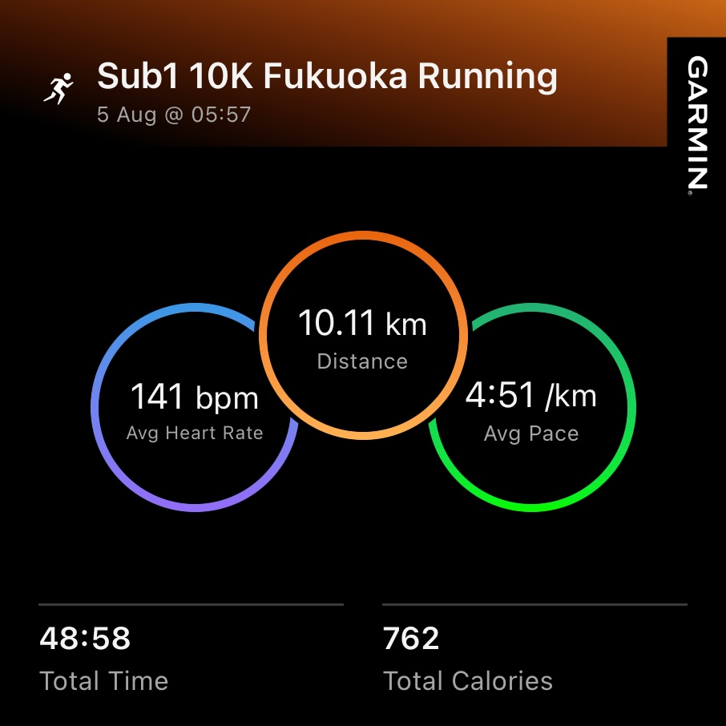
Figure 1: My official Garmin running statistics after completing my
SUB-50 challenge for a 10K city run in Fukuoka, Japan.
On the morning of 5 August, I started my run at 05:57 AM
while the city was still waking up. The cool weather, together with light
morning rain, created nearly perfect running conditions—something I was
fortunate to experience during the Japanese summer.
The final statistics tell the whole story:
10.11 km distance,
48:58 total time,
4:51 min/km average pace,
141 bpm average heart rate,
and approximately 762 calories burned.
Completing another official SUB-50 run while exploring an unfamiliar city
made this morning especially memorable. For me, every business trip is also
an opportunity to discover a city from the perspective of a runner rather
than a tourist.
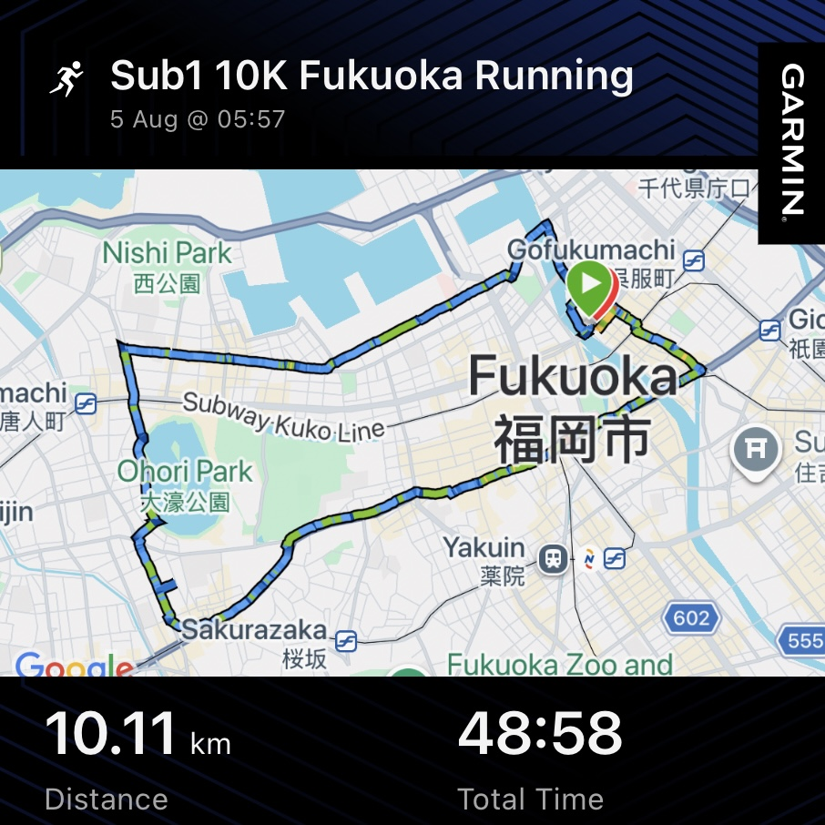
Figure 2: The official Garmin activity summary displaying my finishing time together with the complete running route around central Fukuoka. Looking at the route afterward is almost as satisfying as completing the run itself. Every turn, intersection, bridge, and neighborhood on the map represents another small memory collected during this peaceful morning city run. Instead of simply visiting famous attractions, I experienced Fukuoka one kilometer at a time.
🌅 The Route: Fukuoka, One Kilometer at a Time
I started right where the Hakata and Naka rivers meet, on Showa-dori Avenue, in that narrow window of morning where the city still belongs to the runners, the street cleaners, and nobody else. The air was already warm — this is August in Kyushu, after all — but it hadn’t turned brutal yet. That would come later. For now, it was just me, the river, and ten kilometers of a city I’d never set foot in before yesterday.
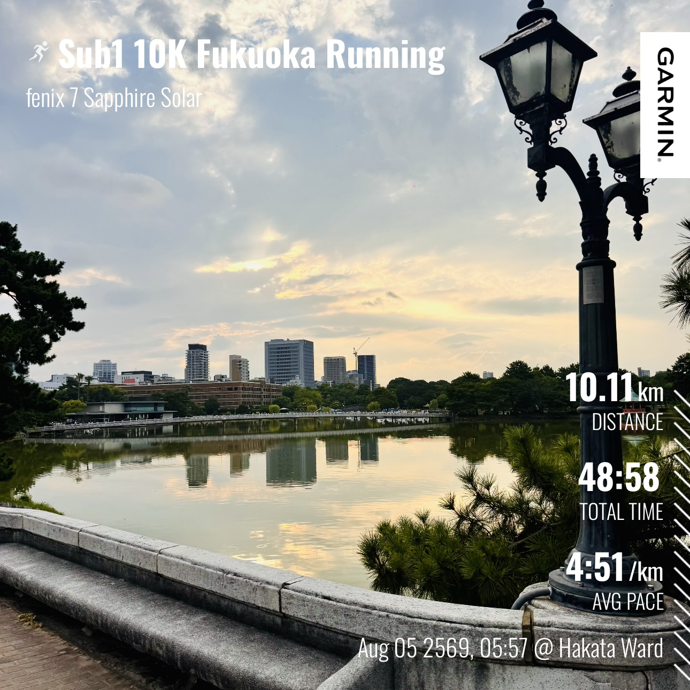
Figure 3: Around the fifth kilometer, I reached
Ohori Park, one of the most popular urban parks in Fukuoka.
The park was already full of life despite the early morning. Local residents
were jogging around the lake, walking with friends, practicing aerobics,
cycling, and simply enjoying another beautiful day outdoors.
Leaving the park, I continued toward the
Ropponmatsu district and passed in front of the
Fukuoka City Science Museum.
I immediately understood why Ohori Park is considered the city's green heart.
It is a place where nature, recreation, and everyday Japanese life blend
together perfectly.
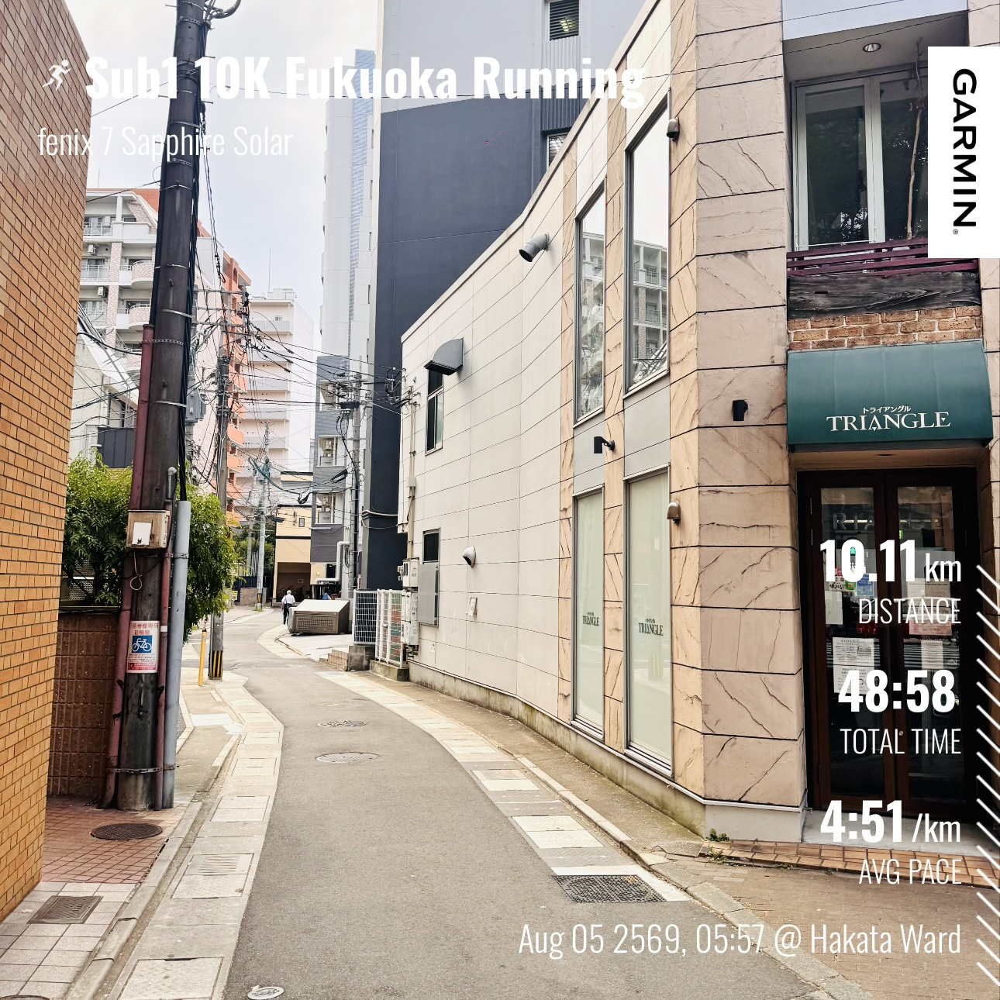
Figure 4: At approximately kilometer seven, I stopped briefly near the TRIANGLE building along Taisho-dori Avenue. Compared with the lively atmosphere around Ohori Park, this section of the route felt remarkably peaceful. The sidewalks were wide, clean, and ideal for running, while the traffic remained surprisingly light. This quiet neighborhood demonstrated another side of Fukuoka—a modern city that is energetic without feeling overwhelming, making it one of the most enjoyable places I have ever experienced for an urban morning run.
KM 1 — Nanotsu-dori Avenue. The first kilometer is always about finding the rhythm, and Nanotsu-dori gave me a clean, wide stretch to do exactly that. Legs still fresh, mind still half-asleep, just letting the pace settle into something sustainable. Nothing dramatic yet — just the quiet click of finding my stride in a brand-new city.
KM 2 — Nagahama Fish Market. This is where Fukuoka started to introduce itself properly. The market was just stirring — crates being stacked, the faint, briny smell of the sea drifting off the docks even though I couldn’t see the water yet. It’s one thing to read that Fukuoka is a port city; it’s another to run straight through the smell of it at six in the morning. Cool moment number one.
KM 3 — Kuromon-gawa-dori. A narrower, more local stretch — the kind of street that doesn’t show up in guidebooks but tells you more about a city than the postcard spots do. I cut left here to line up the next leg, and honestly, this was the kilometer where I stopped feeling like a tourist and started feeling like I actually belonged on these streets, even if just for one morning.
KM 4 — Ohori-koen. You can feel a park before you see it — the air changes, the streets start opening up, and suddenly there’s more sky above you than buildings. Ohori-koen was the setup for what turned out to be the best kilometer of the entire run.
KM 5 — Ohori Park. This one, hands down, was the highlight. A massive park, right in the heart of the city, with a lake that seemed to just appear out of nowhere. The pace didn’t slow, but everything else did — the noise dropped away, the trees closed in, and for about four and a half minutes it didn’t feel like I was running through a city of over a million and a half people. It felt like I had the whole park to myself. If Fukuoka has a signature moment for runners, this is it.
KM 6 — Roppommatsu. After the high of Ohori Park, Roppommatsu brought things back down to a calmer, more residential energy. Quiet streets, a slower pulse to the neighborhood — exactly the kind of stretch you need after an emotional high point, to just breathe and hold pace.
KM 7 — Taisho-dori. Back into proper city rhythm here. Wider roads, more traffic lights, the day clearly starting to wake up around me. This was also, not coincidentally, about the point where the heat started making its presence known.
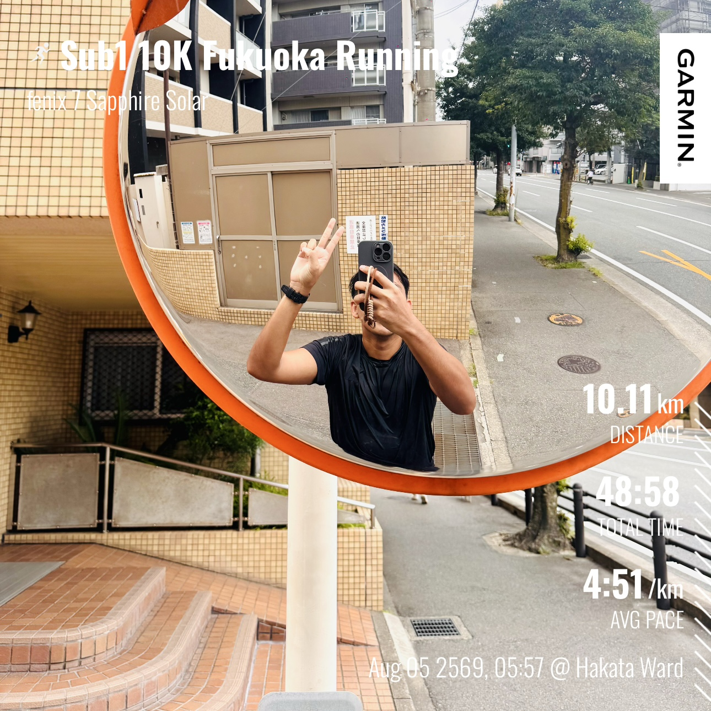
Figure 5: A quick selfie around kilometer eight before heading toward Kego Shrine. Although my legs had already begun to feel the accumulated distance, the excitement of discovering a new city kept my pace comfortable and my smile genuine. Showing the peace sign became a small celebration of another happy running adventure. Sometimes the best travel memories are not made at famous landmarks but during simple moments when everything feels exactly right.
KM 8 — Kego Shrine. One of my favorite surprises of the whole route. A shrine, tucked quietly into the middle of downtown Fukuoka, almost hidden in plain sight between office buildings. Running past it felt like Fukuoka showing me, mid-stride, that it hasn’t forgotten where it came from even as a modern city grew up around it.
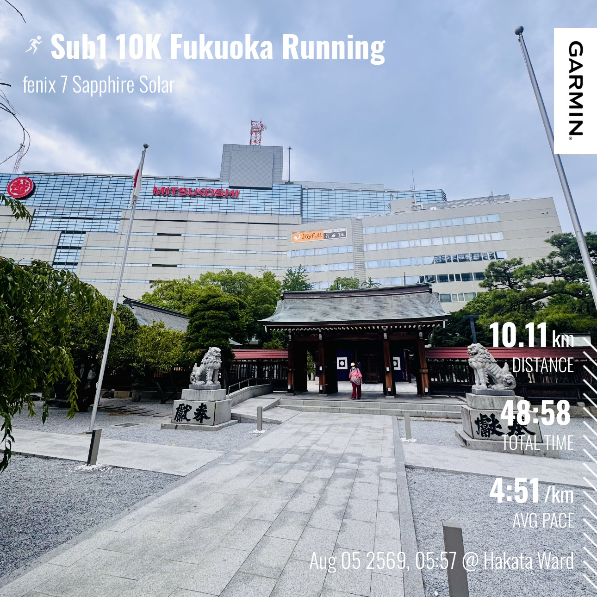
Figure 6: Reaching
Kego Shrine at approximately the eighth kilometer was more
than just another checkpoint—it became a meaningful spiritual pause during
the run.
I offered a quiet prayer, wishing for good health, wisdom, peace of mind,
and happiness for both myself and those around me. Rather than asking for
material success, I simply hoped for a life filled with kindness, meaningful
opportunities, and the ability to share whatever I have with people who need
it more. Traveling often reminds me that true wealth is not measured by
possessions but by health, gratitude, generosity, and inner peace.
KM 9 — Tenjin-Minami toward Ginan-dori Avenue. This is where the city really turned the volume back up — more people, more shopfronts, more of that unmistakable downtown energy. By this point my legs knew exactly what pace I was chasing, and honestly, without really planning to, I started pushing harder here.
KM 10 — Back to Nakasukawabata. The final stretch, and the one that mattered most — looping back toward Nakasukawabata, crossing the bridge over the Hakata River, with the hotel finally coming into view. There’s something about finishing a run exactly where you started — same river, same bridge, but a completely different version of the city now living in your legs and your memory.
Ten kilometers. Two rivers bookending the run. A fish market, a hidden shrine, a park that stopped me in my tracks, and a handful of streets I couldn’t have pronounced twenty-four hours earlier — all stitched into one morning loop through a city I’d just met.
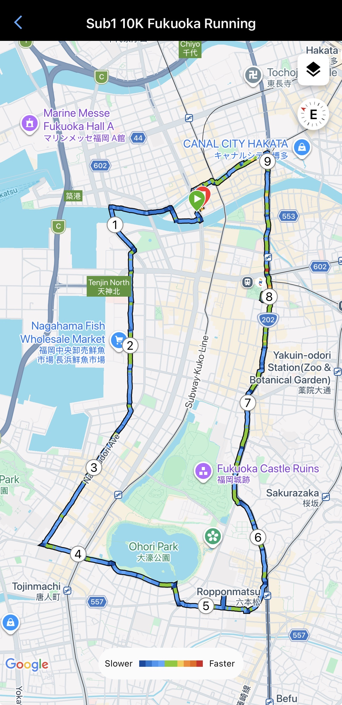
Figure 7: The Google Maps version of my Garmin running route across central Fukuoka. Seeing the completed route from above is incredibly satisfying because it reveals how much of the city can be explored within a single morning run. Every segment represents a different neighborhood, atmosphere, and unique experience. This city run strengthened my impression that Fukuoka is one of the world's most runner-friendly cities, combining beautiful streets, parks, rivers, shrines, and modern urban landscapes within a compact and highly walkable environment.
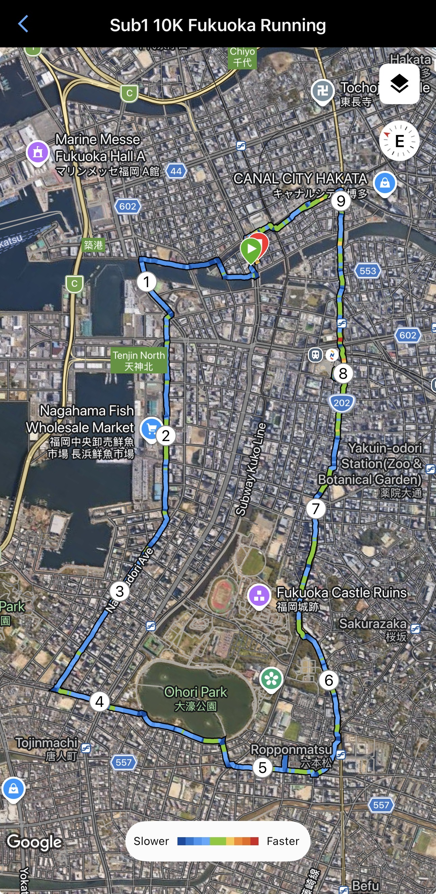
Figure 8: The satellite view of my Garmin route clearly shows the rectangular course that eventually returned to the Hakata River near Nakasukawabata, where I was staying during this business trip. Looking at the satellite imagery makes the adventure even more impressive, highlighting how I connected different districts of Fukuoka into one continuous morning journey. Running is truly one of the best ways to understand the geography and character of a city.
📍 Checkpoint Summary
| KM | Location | Vibe |
|---|---|---|
| Start | Showa-dori Ave, near Hakata & Naka Rivers | Quiet, cool, city still asleep |
| KM 1 | Nanotsu-dori Avenue | Settling into pace |
| KM 2 | Nagahama Fish Market | Salty air, market waking up |
| KM 3 | Kuromon-gawa-dori | Local streets, off the tourist path |
| KM 4 | Ohori-koen | Sky opening up, green approaching |
| KM 5 | Ohori Park | Best kilometer — lake, calm, wide open space |
| KM 6 | Roppommatsu | Quiet, residential, steady pace |
| KM 7 | Taisho-dori | City rhythm returns, heat rising |
| KM 8 | Kego Shrine | Hidden calm among office buildings |
| KM 9 | Tenjin-Minami → Ginan-dori Ave | Downtown energy, pace pushes harder |
| KM 10 | Back to Nakasukawabata, Hakata River bridge | Full circle finish, hotel in sight |
⏱️ The Result: Sub-50, When I Was Only Expecting Sub-1
Here’s the part that genuinely surprised me. The goal going in was modest — just get under an hour, nothing fancy, enjoy the city, don’t overdo it in the August heat. But somewhere along the way, without really meaning to, I started pushing the pace. And by the time I crossed back over that bridge near Nakasukawabata, the watch told a different story than the one I’d planned.
Garmin Stats — 10K Fukuoka City Run, 5 August, 05:57 AM
| Metric | Result |
|---|---|
| Total Time | 48:58 |
| Distance | 10.11 km |
| Avg Pace | 4:51 /km |
| Avg Heart Rate | 141 bpm |
| Total Calories | 762 |
A sub-50 finish. On a route I’d never run before, in a city I’d never visited before, in the middle of a Japanese summer. I’ll take it.
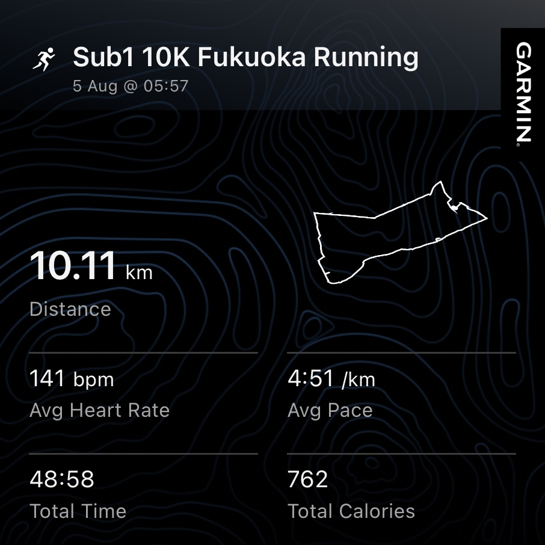
Figure 9: Another official Garmin statistics summary showing detailed performance metrics from today's city run. Beyond recording speed and distance, these numbers document personal consistency and progress over years of training. Every completed run becomes another small investment toward better health, stronger endurance, and a lifestyle that balances professional work with physical well-being.
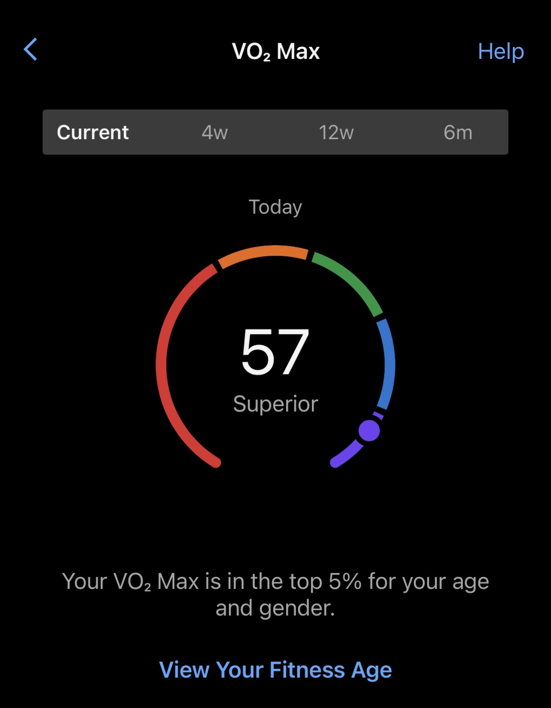
Figure 10: One of the most satisfying results from today's run was seeing my Garmin estimate a VO₂ Max of 57, placing my aerobic fitness in the Superior category and within the top five percent for my age and gender. Although this value is only an estimate, it reflects years of consistent endurance training. More importantly, it reminds me that maintaining good physical fitness is one of the best long-term investments for both personal health and professional productivity.
❤️ Falling for Fukuoka
It’s funny — I came to Fukuoka for work, for a conference, for a presentation I’d been preparing for months. And yet the thing I’ll probably remember most vividly is this one quiet morning run: the rivers, the fish market smell drifting off Nagahama, the sudden green expanse of Ohori Park, the small stillness of Kego Shrine tucked between office buildings, and the bridge at the very end that brought me right back to where I started.
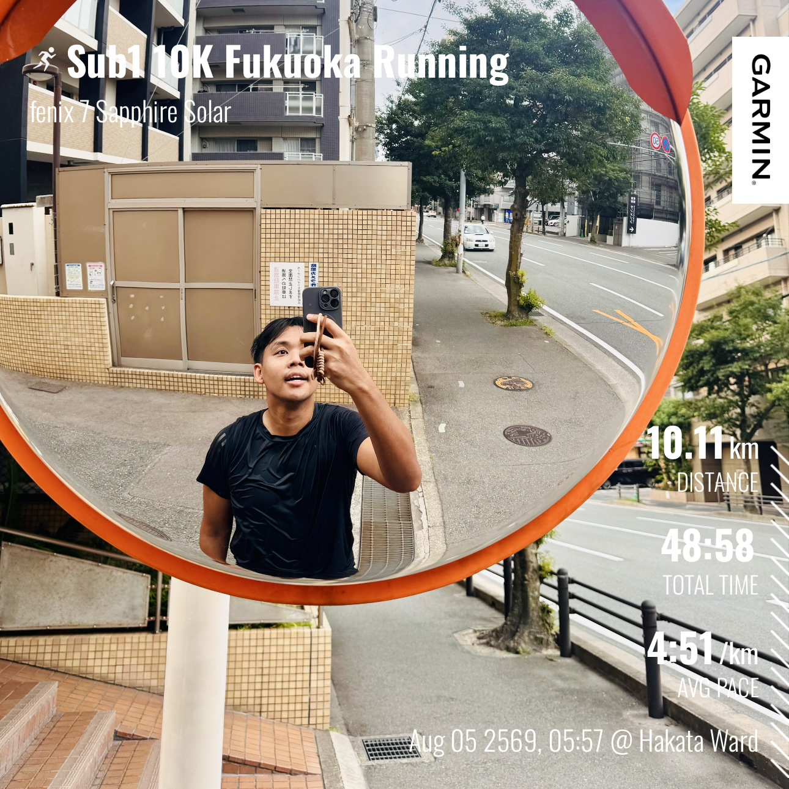
Figure 11: A final running selfie using a roadside convex mirror in the vibrant Tenjin Nishi-dori district. I originally came to Fukuoka to present my GeoAI research at AOGS 2026, but after completing my academic mission, this morning run completely changed the way I felt about the city. Fukuoka is remarkably clean, safe, friendly, and comfortable for runners. Every neighborhood has its own personality, while the local people create a welcoming atmosphere that makes visitors immediately feel at home. And of course, no trip would be complete without enjoying the legendary Hakata Ramen, which absolutely lived up to its worldwide reputation.
Yes, it was hot. Ridiculously hot, actually — August in Kyushu does not go easy on visiting runners, and I felt every degree of it by the final few kilometers. But even with the heat, even as a complete first-timer to this city, I fell for Fukuoka almost immediately. There’s a warmth to it — not just the temperature — that’s hard to put into words. The pace of the streets, the mix of rivers and parks and shrines woven right into the middle of a modern city, the way a 10K loop could take me through so many completely different moods in under fifty minutes.
If AOGS ever brings me back this way — or honestly, even if it doesn’t — I’d love to return in winter and run this same loop again, just to see how differently the city feels in the cold. Something tells me Ohori Park in winter light would be worth the trip all on its own.
For now, though: thank you, Fukuoka. My first visit, and already one I won’t forget.
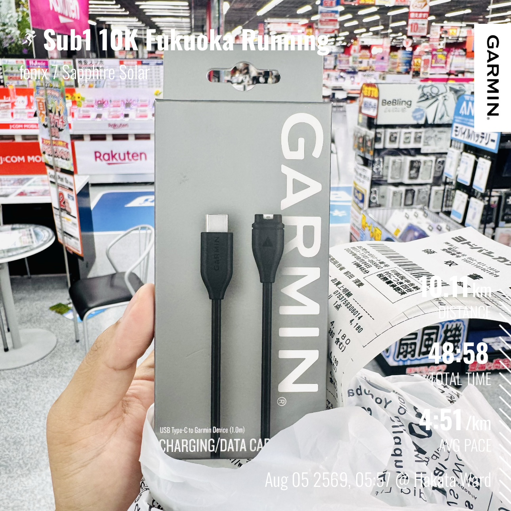
Figure 12: The final photo from this unforgettable trip tells
a surprisingly funny story.
I accidentally forgot my Garmin charging cable back at my condominium in
Bangkok. Since running was an essential part of this business trip, I had no
choice but to purchase an original replacement in Japan.
It certainly wasn't a planned expense—and perhaps it's better not to mention
the price! Normally I use third-party accessories, but the original cable
worked flawlessly from the very first charge. Looking back, it became another
memorable part of the journey.
This business trip began with scientific presentations and international
research collaboration, but it ended with something equally valuable:
discovering one of the best cities I have ever experienced as a runner.
Thank you, Fukuoka, for the unforgettable memories, the beautiful streets,
the peaceful mornings, the incredible hospitality, and the inspiration to
keep exploring the world one run at a time.
Sub-50 10K, first visit to Fukuoka, one very hot but very happy morning. Until next time.
Citation
Panboonyuen, Teerapong. (August 2026). Sub-50 10K Fukuoka City Run: My First Visit to Fukuoka, Japan, One Kilometer at a Time. Blog post on Kao Panboonyuen.
https://kaopanboonyuen.github.io/blog/2026-08-05-sub-50-10k-fukuoka-city-run-my-first-visit-to-fukuoka-japan-one-kilometer-at-a-time/
For a BibTeX citation:
@article{panboonyuen2026fukuokacityrun,
title = "Sub-50 10K Fukuoka City Run: My First Visit to Fukuoka, Japan, One Kilometer at a Time",
author = "Panboonyuen, Teerapong",
journal = "kaopanboonyuen.github.io/",
year = "2026",
month = "August",
day = "5",
url = "https://kaopanboonyuen.github.io/blog/2026-08-05-sub-50-10k-fukuoka-city-run-my-first-visit-to-fukuoka-japan-one-kilometer-at-a-time/"
}
Thank you for joining me on this memorable 10K city run through Fukuoka, Japan. What began as a business trip to present my GeoAI research at AOGS 2026 unexpectedly became one of my favorite running experiences and my very first opportunity to explore the city beyond the conference venue.
Rather than taking a sightseeing bus or following a conventional travel itinerary, I chose to discover Fukuoka the way I enjoy most—one kilometer at a time. Starting before sunrise, I ran through the peaceful streets of Hakata, crossed the rivers that connect the city’s vibrant neighborhoods, visited the beautiful Ohori Park, continued through Ropponmatsu, Tenjin, and Kego Shrine, before finally returning to Nakasukawabata. Every kilometer revealed another side of Fukuoka’s unique character: clean streets, beautiful parks, friendly people, excellent running infrastructure, and an atmosphere that immediately made me feel welcome.
Although my original goal was simply to complete another comfortable sub-1-hour 10K, the cool weather and light morning rain created ideal running conditions. To my surprise, I crossed the finish in 48:58, achieving another Sub-50 10K with an average pace of 4:51 min/km over 10.11 kilometers. More satisfying than the finishing time itself was the feeling of exploring an entirely new city entirely under my own power.
This trip also reminded me that international conferences are about much more than presenting research papers. They offer opportunities to experience different cultures, meet inspiring people, build international collaborations, and create unforgettable personal memories outside the lecture halls. Sometimes the most meaningful moments happen after the conference ends—when curiosity leads us to step outside and discover a city from a completely different perspective.
I would like to express my sincere gratitude to the Asia Oceania Geosciences Society (AOGS) for organizing another outstanding international conference, and to everyone who contributed to making my first visit to Fukuoka such a memorable experience. My appreciation also goes to the local residents whose active lifestyle transformed the city’s parks and streets into vibrant spaces that inspired me throughout the run.
Finally, thank you, Fukuoka. This city exceeded every expectation I had before arriving in Japan. From the peaceful morning atmosphere and world-class running routes to the warmth of its people and, of course, the unforgettable Hakata Ramen, every experience left a lasting impression. I arrived to share my research with the international scientific community, but I returned home with something equally valuable—a new favorite city and memories that will continue to inspire many future runs around the world.
Run the city. Feel the culture. Explore the world—one kilometer at a time. 🏃🇯🇵❤️
Teerapong Panboonyuen
My research focuses on leveraging advanced machine intelligence techniques, specifically computer vision, to enhance semantic understanding, learning representations, visual recognition, and geospatial data interpretation.